Size-3 Network Motifs in 'fs_0.5_ps_0.15_fd_0.5_pd_0.15_rep_1.txt' |
Page 1 |
Generated with
FANMOD - FAst Network MOtif Detection. Written by Sebastian Wernicke and Florian Rasche
| ID |
Adj |
Frequency
[Original] |
Mean-Freq
[Random] |
Standard-Dev
[Random] |
Z-Score |
p-Value |
| 238 |
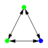 |
1.5055% |
0.89603% |
4.2205e-005 |
144.41 |
0 |
| 238 |
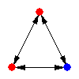 |
0.95643% |
0.55855% |
6.2406e-005 |
63.757 |
0 |
| 238 |
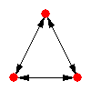 |
1.1158% |
0.86675% |
4.6068e-005 |
54.069 |
0 |
| 78 |
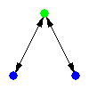 |
0.10627% |
0.088134% |
4.1513e-006 |
43.688 |
0 |
| 238 |
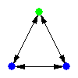 |
0.77931% |
0.64631% |
3.0443e-005 |
43.688 |
0 |
| 238 |
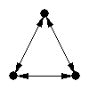 |
1.9129% |
1.0391% |
0.00023014 |
37.966 |
0 |
| 238 |
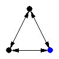 |
2.4442% |
1.5404% |
0.00030464 |
29.669 |
0 |
| 238 |
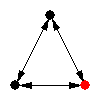 |
6.0043% |
4.2609% |
0.00060497 |
28.817 |
0 |
| 238 |
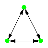 |
0.7616% |
0.32386% |
0.00015437 |
28.356 |
0 |
| 238 |
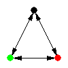 |
6.447% |
4.1261% |
0.00090362 |
25.685 |
0 |
| 238 |
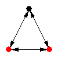 |
5.0301% |
3.7707% |
0.00051927 |
24.254 |
0 |
| 238 |
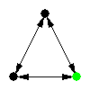 |
3.3652% |
1.9634% |
0.00064581 |
21.706 |
0 |
| 238 |
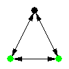 |
2.5682% |
1.3695% |
0.00055495 |
21.601 |
0 |
| 238 |
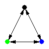 |
3.6309% |
2.3029% |
0.00081424 |
16.31 |
0 |
| 238 |
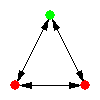 |
2.3379% |
1.5873% |
0.00050257 |
14.937 |
0 |
| 238 |
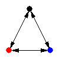 |
3.7726% |
2.5447% |
0.0008289 |
14.814 |
0 |
| 238 |
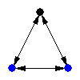 |
1.1158% |
0.86485% |
0.00017149 |
14.635 |
0 |
| 238 |
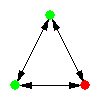 |
1.6649% |
0.92885% |
0.00050403 |
14.603 |
0 |
| 238 |
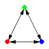 |
2.1254% |
1.3241% |
0.00075148 |
10.662 |
0 |
| 238 |
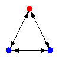 |
0.61991% |
0.492% |
0.00013159 |
9.7201 |
0 |
Previous
Index
Next
Generated with
FANMOD - FAst Network MOtif Detection.
Written by Sebastian Wernicke and Florian Rasche
|